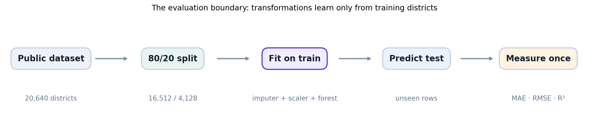
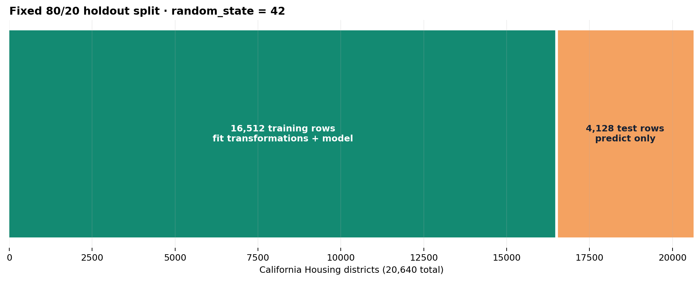
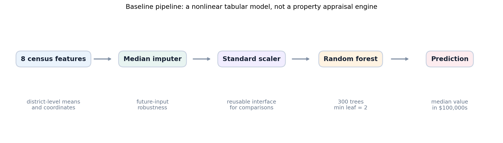
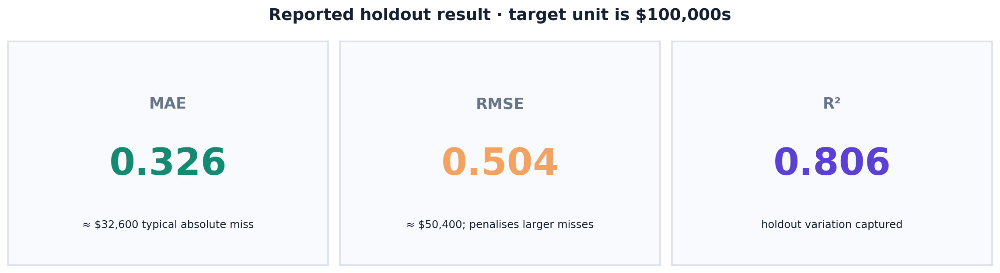
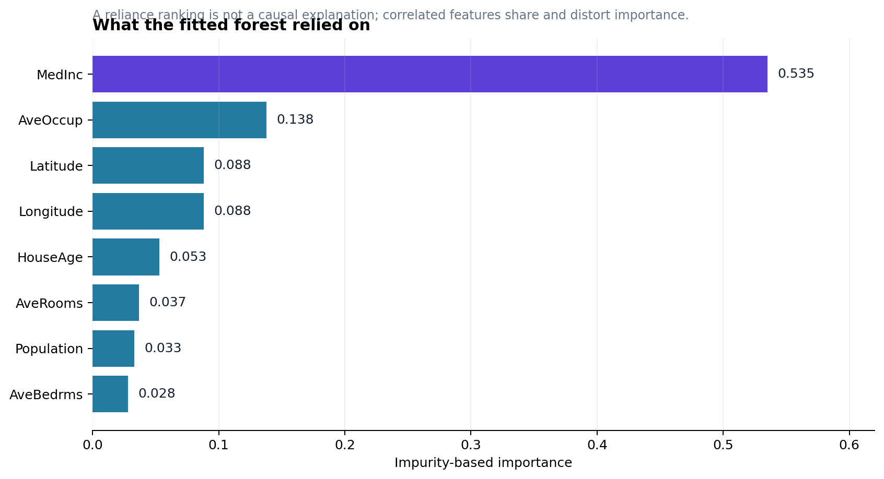
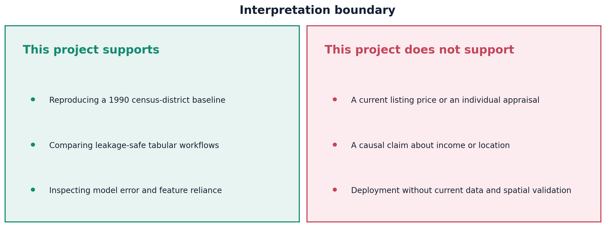

01 · The conclusion first
A solid historical baseline—not a valuation product.
The project has a valid small-scope claim: with a fixed random split of the California Housing dataset, a 300-tree random forest produced a saved holdout R² of 0.806. The target is a capped, 1990, district-level median. That evidence is useful for a reproducible machine-learning demonstration and insufficient for appraising homes or forecasting a live market.
MAE in $100,000s; about $32,600.
RMSE; about $50,400.
R² on 4,128 random holdout rows.
02 · Evidence ledger
Every claim has a visible source.
| Claim | Evidence location | Scope |
|---|---|---|
| 20,640 rows, 8 features, target unit | Saved output in the preserved combined notebook | Fetched scikit-learn dataset |
| MAE 0.326 / RMSE 0.504 / R² 0.806 | Saved metrics table in the preserved combined notebook | One fixed 80/20 random split |
| Pipeline order and hyperparameters | src/housing_model.py | Current runnable implementation |
| Direct command can resolve project imports | tests/test_housing_model.py | Regression test, not a performance test |
| Data provenance and no-raw-data rule | data/README.md | Repository operating boundary |

The pipeline is ordered to protect the holdout. The test partition does not contribute preprocessing statistics or tree splits.
03 · Data contract
The target is historical, capped, and district-level.
The project calls fetch_california_housing(as_frame=True). The source is downloaded and cached by scikit-learn rather than copied into this repository. Each row describes a California census district; it does not describe a particular address or transaction.
| Feature group | Meaning | Interpretation caveat |
|---|---|---|
MedInc | Median income in tens of thousands of dollars | Historical area-level proxy; correlation is not causation. |
HouseAge | Median housing age | Top-coded at 52 years. |
AveRooms, AveBedrms | Mean rooms/bedrooms per household | Ratios include extreme districts. |
Population, AveOccup | Population and mean occupancy | Skew and outliers need diagnostic attention. |
Latitude, Longitude | District location | Spatial structure can cross a random split. |
MedHouseVal reaches 5.00001 ($500,001). Values at that boundary are censored. The model can learn the label it is given, but cannot distinguish the full variation above the cap.04 · Evaluation boundary
Split before learning any data-dependent state.
Fitting a scaler or imputer on all rows before splitting would let the holdout influence training. A scikit-learn Pipeline makes the intended sequence executable: it fits transformations only when pipeline.fit(X_train, y_train) is called, then reuses that learned state during pipeline.predict(X_test).

The holdout is an evaluation boundary. It is not used to fit preprocessing or the model.
05 · Baseline model
One inspectable pipeline, chosen for a credible first comparison.

The scaler is retained for a reusable preprocessing contract, even though tree splits themselves do not require scaled inputs.
| Choice | Configuration | Why it exists |
|---|---|---|
| Estimator | RandomForestRegressor | Captures nonlinear tabular relationships without a deep-learning stack. |
| Forest size | 300 trees | Reduces individual-tree variance for a stable baseline. |
| Leaf constraint | min_samples_leaf=2 | Discourages terminal leaves containing a single training district. |
| Imputation | Median | Training-only robustness if future inputs contain missing values. |
| Seed | random_state=42 | Reproducible split and forest configuration. |
pipeline = build_pipeline(random_state=42) pipeline.fit(X_train, y_train) # Learns only from training rows predictions = pipeline.predict(X_test) metrics = evaluate_predictions(y_test, predictions)
06 · Results and diagnostics
Three metrics, each answering a different question.

Reported values are taken from the preserved executed baseline notebook.
| Metric | What it measures | What it cannot answer |
|---|---|---|
| MAE | Average magnitude of prediction error. | Whether a few large misses exist or where errors concentrate. |
| RMSE | Error with greater emphasis on large misses. | Whether errors are unbiased or equitable. |
| R² | Variance captured versus a constant predictor on this holdout. | Whether a property’s price is 80.6% “known”. |
Feature reliance is not causality

Income, occupancy and location are prominent in the fitted forest. Correlation, split opportunities, and proxies affect this ranking.
The importance chart describes the fitted forest’s split reliance. It does not show interventions, causes, or fairness. A stronger follow-up uses permutation importance and examines residuals by geography and target range.
07 · Correct interpretation
Keep the claim matched to the evidence.

Supported
- Reproducing a transparent 1990 district-level regression baseline.
- Demonstrating a leakage-safe scikit-learn workflow.
- Inspecting holdout error and fitted-model reliance.
Not supported
- Appraising a house or listing price today.
- Claiming income or coordinates cause prices.
- Claiming accuracy in an unseen geographic market.
08 · Reproduce and verify
Run the project, then read the notebooks.
python -m venv .venv .venv\Scripts\Activate.ps1 pip install -r requirements.txt python src/train.py python -m pytest # Rebuild explanatory assets python scripts/make_figures.py python scripts/build_notebooks.py
| Artefact | Purpose |
|---|---|
notebooks/01_house_price_modeling.ipynb | Preserved combined notebook and saved baseline evidence. |
notebooks/01_exploratory_data_analysis.ipynb | Detailed descriptive analysis with comments explaining why every stage is included. |
notebooks/02_model_development.ipynb | Detailed split, training, evaluation and interpretation walkthrough. |
tests/test_housing_model.py | Four focused tests for reproducibility, prediction shape, metric arithmetic and direct-script imports. |